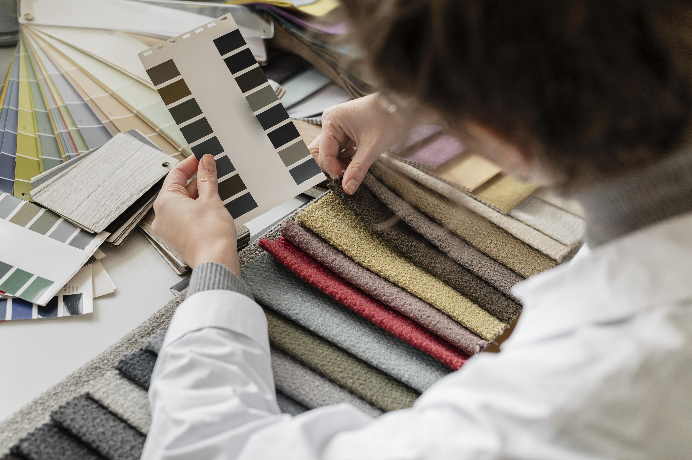
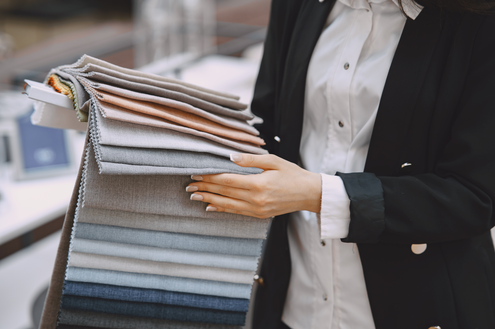

PRINTING
Duygu Textile provides perfect and fast service to its customers with its high quality and capacity filmdruck printing track and experienced design team. Thanks to the harmonious work of the leading production team of the textile industry and the creative design team of the fashion world, We Teks offers the highest quality products with a reliable and accessible price policy.
Read More

DIGITAL PRINTING
Duygu Textile offers the same variety and opportunities in the field of digital printing with its experienced printing and design staff. In order to meet the needs of the developing technology and to offer faster and more diverse options to its customers, We Teks provides services with its high quality production track and service principles, which also includes digital technology.
Read More

WEAVING
Due to its full service understanding, Duygu Textile meets the demands of its customers with its investments in fabric weaving as in every field. Thanks to its looms and mass production track, it can offer various, special and new fabrics to its customers with the support of its own R&D department. In addition, while doing all these, We Teks can offer the standards it offers from top to bottom without sacrificing its assurance and quality in the field of weaving.
Read More

FLAT PAINT
With its flat dyeing unit, Duygu Textile has the ability to dye different types and mixtures of fabrics that the industry needs. The high-capacity production unit offers its services in line with the quality production approach and standards of We Teks. We Teks, which aims to achieve the desired color quality perfectly and to serve its customers with zero error, has a trained technical staff, an advanced laboratory and quality standards in this direction.
Read More

DUYGU TEXTILE
| MAKE A DIFFERENCE